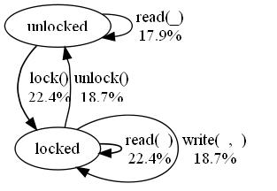

| Overview |  |
Copyright © Quviq AB, 2006-2015
Version: 1.34.3
This module is designed for testing software with a finite number of abstract states--for example software described by UML statecharts. It allows users to specify a collection of named states and the transitions between them, along with pre- and post-conditions and state transition functions. Users can assign weights to transitions, to achieve a good statistical distribution of test cases, and eqc_fsm can help users do so by generating visualizations of the state diagram, and by automated weight assignment.
eqc_fsm is closely related to eqc_statem, and
generates test cases of precisely the same form. (One way to think
of eqc_fsm is that it is to eqc_statem as
gen_fsm is to gen_server). We assume that readers
are already familiar with eqc_statem; if not, study the
eqc_statem documentation before reading further.
State machines are specified by a module defining call-back
functions that are invoked to test the state machine. The
call-backs closely resemble those used by eqc_statem (and
are actually implemented in terms of them). The main differences
are that the command generation call-back command(S) is
replaced by a collection of functions corresponding to named
states, and that the other call-backs are simpler to define, since
QuickCheck can derive some of the information that the
eqc_statem call-backs provide from the named state
definitions.
-include_lib("eqc/include/eqc_fsm.hrl"). (If QuickCheck is not installed in your Erlang library directory, then you will need to use -include and give a different path). This imports all the exported functions from eqc_fsm, together with those functions from eqc_statem that are usable with eqc_fsm too. Note that you should not include eqc_statem.hrl in the same module.
eqc_fsm tracks the state of each test case, just as
eqc_statem does, but eqc_fsm splits the state into
two parts: a state name (normally an atom), which
corresponds to one of the states in a finite-state machine diagram,
and state data, which may be any relevant information, but
is normally a record. This is a similar distinction to that made
between state names and state data by gen_fsm in the OTP
libraries. Complete states are represented by a pair of the state
name and the state data.
Each named state is defined by a function of the same name, taking the state data as a parameter, which returns a list of target state names to which a transition can be made, paired with generators for symbolic function calls whose execution follows that transition. For example, in a system with two named states, locked and unlocked, the unlocked state might be specified by
unlocked(S) ->
[{unlocked,{call,locker,read,[]}},
{locked, {call,locker,lock,[]}}].
which specifies that a transition from the unlocked state
to the locked one can be made by calling
locker:lock(), or we can call locker:read() and
remain in the same state. eqc_fsm generates test cases
which follow the transitions specified in this way from state to
state. To a first approximation, we can think of an implicit
eqc_gen:oneof/1 being applied to the result of a state
function.
The state data may only be used in QuickCheck generators in the parameters of the symbolic calls. It is an error for the target states, and the names of the functions to be called, to depend on the value of the state data. As a consequence, it is not possible to use the usual QuickCheck trick of including a transition only if the state data permits it. For example, if the state data is a list, and read must be passed one of its elements, then we cannot write
unlocked(S) ->
[{unlocked,{call,locker,read,[elements(S)]}} || S/=[]] ++
[{locked, {call,locker,lock,[]}}].
because the transitions in the list returned now depend on the value of S. The solution to this problem follows in the next section.
A state function must return the same list of target states and transition generators, even if the state data is invalid. More precisely, it must do so for the initial state data, and all possible values of the state data in any reachable state. This means it is invalid to pattern match on the state data in the head of a state function definition, unless the pattern matches the initial state data, and all possible later values of the state data. Otherwise, an exception may be raised when QuickCheck analyses the state space.
QuickCheck avoids transitions whose generation raises an exception. This can be used to include "conditional transitions" such as the read transition in the example above. We write instead:
unlocked(S) ->
[{unlocked,{call,locker,read,[elements(S)]}},
{locked, {call,locker,lock,[]}}].
If the first transition is chosen when S is the empty
list, then eqc_gen:elements/1 will raise an exception when
QuickCheck tries to generate the call of read. This is
detected, and the other transition is chosen instead.
If necessary, an exception can be delayed until generation time by
enclosing the expression responsible in ?LAZY(...). For
example, if the argument to read were hd(S)
instead of elements(S), then this would raise an exception
if S is the empty list when unlocked is
called--and before returning the list of transitions to
QuickCheck. To avoid this, we would write ?LAZY(hd(S))
instead, to delay the exception until the moment when QuickCheck
has chosen the first transition, and tries to generate the argument
of read.
If the target state name is the atom history, then this represents a transition to the same state. This can be used to abstract a set of transitions that can be used in several different states. For example,
read_transition(S) ->
[{history,{call,locker,read,[elements(S)]}}].
could be used to define a read transition that can be included in any other state by adding read_transition(S)++... to the state definition; whatever state it is used in, the read transition returns to the same state.
State functions may take additional parameters before the state data, called attributes. For example,
unlocked(N,S) ->
[{{unlocked,N+1},{call,locker,add,[value()]}} || N<4] ++
[...other transitions...].
might represent a locker containing N values. When attributes are used, then the state names are tuples of the function name and the attribute values (all the parameters except the last). States with different attribute values are considered to be different states: {unlocked,0} and {unlocked,1} are different states in this example. Since QuickCheck enumerates every reachable state, then it is important that there are only finitely many reachable attribute values--this is why we only include an add transition when N is less than 4 in the example above--this ensures that states {unlocked,N} are not reachable for N greater than or equal to 5.
It is perfectly allowable for the list of transitions to depend on the values of attributes, as in this example--it is only the state data whose use is restricted.
eqc_fsm specifications need not specify separately how each command changes the state name--this is already specified by the definitions of each state. But it is necessary to specify how each command changes the state data. This is done via a call-back function
next_state_data(From,To,S,Res,Call) -> state_data()where
eqc_statem, this may be a symbolic variable,Just as in eqc_statem, the result of this function may
contain symbolic variables and function calls, which are replaced
by their values when the test is run.
QuickCheck already knows that each call can only be made in a named state with a corresponding transition, but some calls may have preconditions that depend on the state data. These preconditions are specified by defining the callback
precondition(From,To,S,Call) -> bool()
where the parameters are as described above for next_state_data. This callback must be defined, and must return true or false for each symbolic call generated. No test cases are ever generated in which a call has a false precondition.
It is allowable for two transitions from a state to call the same function--for example, in a normal case, and in an error case leading to an error state. In such a case, the precondition callback may only return true for one of the calls; otherwise QuickCheck would not be able to tell which transition to follow.
Postconditions are specified by defining the callback
postcondition(From,To,S,Call,Res) -> bool()
whose parameters are as described above for next_state_data. Postconditions are checked as a test case is run: any return value other than true is considered to be a test failure.
Invariants can be specified by defining the callback
invariant(StateName,S) -> bool()
whose parameters are the current state name and state data. Invariants are checked as a test case is run: any return value other than true is considered to be a test failure. The intention is that invariant should check the actual state of the software under test, and compare it to the modelled state given by StateName and S.
If no call-back with this name is defined, then the invariant is assumed to be true.Dynamic preconditions can be specified by defining the callback
dynamic_precondition(StateName,S,Call) -> bool()
whose parameters are the current state name and state data, and the current call with actual (i.e. not symbolic) argument values. Dynamic preconditions are checked as a test case is run: if the return value is false, then the command is not executed. If no call-back with this name is defined, then the precondition is assumed to be true.
Dynamic preconditions have significant disadvantages, and
should only be used if there is no reasonable alternative.
In particular, a dynamic precondition should not be used
just because it easier to do so, than to enrich the model state
with more information so
that preconditions can be decided during test case generation. See
the discussion in eqc_statem of the disadvantages of
dynamic preconditions; in addition, in the context of eqc_fsm, dynamic preconditions cannot be used to disambiguate
transitions, while normal preconditions can. So DON'T USE
THEM, unless you really must.
Features are specified by defining the callback
call_features(From,To,S,Call,Res) -> bool()
whose parameters are as described above for
postcondition. Features are recorded as a test case
is run, and can be recovered from the test history using eqc_statem:command_features/1.
eqc_fsm specifications are tested using very similar
properties to eqc_statem specifications: the only
difference is that the commands/1 and
run_commands/2 functions are imported from eqc_fsm
instead (which is done by the eqc_fsm.hrl include
file). Thus a suitable propery might look something like this:
prop_locker() ->
?FORALL(Cmds,commands(?MODULE),
begin
locker:start(),
{H,S,Res} = run_commands(?MODULE,Cmds),
locker:stop(),
Res == ok
end).
The definitions of state functions described above offer no opportunity to specify how often each transition should be chosen. This is done instead by a separate callback:
weight(From,To,Call) -> integer()
This callback is optional: if it is omitted (or not
exported), then the transitions from each state are chosen with
equal probability. If weight is defined, then the weights
it assigns to each transition are used in the same way as the
weights passed to the eqc_gen:frequency/1 function: the
probability of choosing a transition is proportional to the weight
assigned to it.
It is important to measure the resulting distribution of transitions in the generated test data. This can be done during testing by amending the last line of the property above to
aggregate(zip(state_names(H),command_names(Cmds)),
Res == ok)
using the functions eqc:aggregate/2, state_names/1,
eqc_statem:command_names/1, and
eqc_statem:zip/2. The output generated shows the proportion
of each state name/function name combination in the total set of
transitions run.
eqc_fsm can generate diagrams visualizing the state space and the transitions between states, along with the frequency with which each transition is tested.
QuickCheck uses external tools to generate and display visualizations. Users need to install these tools separately, and make them available to QuickCheck.
QuickCheck generates visualizations of the state space in the dot graph description language. These can be converted to a wide variety of image formats using the GraphViz tools, which can be downloaded from www.graphviz.org for a wide variety of platforms, under the open-source Common Public Licence.
Once installed on your system, ensure that dot (or dot.exe) is accessible via your path. If you can invoke dot in your shell by typing dot, then QuickCheck should be able to make use of it. Alternatively, you can specify the location of this file in the environment variable EQC_DOT. QuickCheck will use dot to generate JPEG visualizations (or another supported image type of your choice).
If you provide QuickCheck with a JPEG viewer, then it will use it to display visualizations automatically. Under Windows XP and Vista, nothing needs to be done--your default JPEG viewer will be used automatically. Under other operating systems (or if you want to use a different viewer), you should set the environment variable EQC_VIEWER to the location of the viewer of your choice. QuickCheck displays images by running a shell command of the form <EQC_VIEWER> <filename>.jpg. You can specify another image type supported by GraphViz when generating images; in this case, the viewer should of course be suitable for the type of image you choose.
Visualizations are created and displayed by visualize/1. If
only the dot file is required, then it can be generated by dot/1. The visualizations include the estimated frequency of each
transition when tests are run.
QuickCheck can predict the frequency with which each transition in the state machine will be followed during testing, and can also use these predictions to suggest a suitable choice of weights.
Calling analyze(M) builds the state space for the state machine
specified in M, and predicts the frequency with which each
transition is tested, taking into account the weights specified in
the weight callback. Calling visualize/1 performs the
analysis, and displays a visualization of the result, such as this
example:

The percentages shown are the number of times the labelled transition will be followed during testing, as a percentage of the total number of transitions followed. The result of the analysis should agree with measured transition frequencies when sufficiently any tests are run (several thousands)--but the analysis is much quicker.
The results can be used to help assign appropriate weights to transitions. Users should aim to avoid orphan transitions, which are tested very rarely, because bugs which depend on such orphans will take a very long time to find.
The analysis assumes that once a transition has been chosen, then a suitable call can always be generated. If attempts to generate a call can fail--either because the generation raises an exception, or because the precondition is false--then the analysis will overestimate the frequency of that and subsequent transitions. It is important to compare the analysis results with actual measured transition frequencies, to see to what extent this is occuring.
To perform an accurate analysis, QuickCheck needs to know how often the attempt to generate a suitable call fails--which cannot be determined in advance. Users can provide an estimate of this by defining the (optional) call-back
precondition_probability(From,To,CallGen)
where From and To are the source and target state names, and
CallGen is the generator for a symbolic function call specified in
the definition of the From state. The result should be a float
between 0 and 1, which is the estimated probability of succeeding to
generate a call satisfying the precondition for this transition. For
example, if we expect generation of a read call in an unlocked state
to fail half the time, then we could define
precondition_probability(unlocked,_,{call,locker,read,_}) -> 0.5;
precondition_probability(_,_,_) -> 1.0.
QuickCheck can assign weights to transitions automatically, taking into account the user's estimates of precondition probabilities specified above. QuickCheck compensates for a low precondition probability by trying to choose that transition more often. Weights are assigned so as to avoid orphan transitions, as far as possible--although in most cases, no assignment of weights can ensure an absolutely even distribution of testing effort.
The weight assignment is computed by automate_weights/1,
which outputs a candidate definition of the weight call-back, and
(if GraphViz and a JPEG viewer are available) visualizes the
resulting transition frequencies. The definition of weight
can be pasted back into the eqc_fsm specification, to
cause QuickCheck to use the computed weights.
The assigned weights are not necessarily "optimal" in any sense, but are often better than a hand-assignment. It is still important to measure actual transition distribution, and tune the assigned weights if necessary.
Often, some transitions should be tested more often than others: for example, one transition may call a function with no arguments, while another may have many complex arguments, with a wide variety of choices to explore. Of course, the latter needs to be tested more often than the former. When weights are assigned manually, then the user can take this into account by weighting the latter transition more highly, but when they are assigned automatically then a different mechanism is required.
Users can prioritize transitions by defining the optional call-back
priority(From,To,CallGen) -> integer() | float()with the same parameters as
precondition_probability. The
automated weight assignment will then choose weights that increase
the execution frequency of highly prioritized transitions. For
example, using the same state machine as in the diagram above, we
could increase the priority of lock transitions by defining
priority(unlocked,_,{call,_,lock,_}) -> 10;
priority(_,_,_) -> 1.
The resulting transition frequencies are as shown here:

lock and unlock transitions are
assigned a greater weight--the latter, because choosing unlock is
necessary to permit another lock, so unlocking more often permits
more tests of locking. Automated weight assignment takes into
account these kinds of interactions between transitions, which is
hard to do well by hand.
callback_module() = atom()
The name of a module containing the eqc_fsm callbacks, as specified above.
command() = eqc_statem:command()
As in eqc_statem.
flows() = [{float(), transition_pattern()}]
A list of transition patterns, paired with the proportion of executed transitions that match that pattern. The proportions sum to 1.
gen(A) = eqc_gen:gen(A)
As in eqc_gen.
pattern() = any()
A term possibly containing the atom '_', which matches any similar term where occurrences of '_' may match any value.
state_data() = any()
state_name() = atom() | tuple()
transition_pattern() = {state_name(), state_name(), pattern()}
A pattern matching a transition from the first state to the second, making a symbolic call matching the pattern.
| analyze/1 | Analyzes the state machine specified in M, to predict the
frequency with which each transition is tested, taking into account
the weights specified in the weight callback and the probability
of preconditions failing specified in the
precondition_probability call-back. |
| automate_weights/1 | Computes an appropriate set of transition weights for the
transitions in a callback module, using the priority callback to
guide the distribution of transitions. |
| automate_weights/2 | Like automate_weights/1, but takes the image type as a parameter. |
| commands/1 | Generates a list of commands, just like eqc_statem:commands/1. |
| commands/2 | Generates a list of commands, starting from the given initial
state with the given state data, just like eqc_statem:commands/2. |
| dot/1 | Visualizes the state graph of the callback module, creating a file M.dot which can be viewed with GraphViz. |
| parallel_commands/1 | Generate a parallel test case from the callbacks in the client module Mod. |
| parallel_commands/2 | Behaves like parallel_commands/1, but generates a test
case starting in the state S. |
| run_commands/2 | Runs a list of commands generated using commands/1,
just as does eqc_statem:run_commands/2. |
| run_commands/3 | Behaves like run_commands/2, but also takes an environment
containing values for additional variables that may be referred
to in test cases. |
| run_parallel_commands/2 | Runs a parallel test case, and returns the history of the prefix, each of the parallel tasks, and the overall result. |
| run_parallel_commands/3 | Like run_commands/2, but also takes an
environment binding variables, like run_commands/3. |
| state_after/2 | Returns the symbolic state after a list of commands is run. |
| state_names/1 | Extracts the state names from a history. |
| states/1 | |
| visualize/1 | Visualizes the state graph of the callback module, and the
transition frequencies computed by analyze/1. |
| visualize/2 | Like visualize/1, but takes the image type as a parameter. |
analyze(M::callback_module()) -> flows()
Analyzes the state machine specified in M, to predict the
frequency with which each transition is tested, taking into account
the weights specified in the weight callback and the probability
of preconditions failing specified in the
precondition_probability call-back. The result of the
analysis should agree with measured transition frequencies, when
several thousand tests are run.
automate_weights(M::callback_module()) -> any()
Computes an appropriate set of transition weights for the
transitions in a callback module, using the priority callback to
guide the distribution of transitions. Outputs a definition of the
weight callback that users can, if they wish, make use of
by pasting the definition into their callback module. Generates a
visualization of the resulting distribution of transitions in
Mod.dot, which can be visualized using GraphViz. Displays the
visualization immediately, if GraphViz and a JPEG viewer are available.
The weight assignment is based on the analysis implemented by
analyze/1 and visualize/1.
automate_weights(M::callback_module(), ImageType::atom()) -> any()
Like automate_weights/1, but takes the image type as a parameter. This permits
generation of other image types than JPEG.
commands(M::callback_module()) -> gen([command()])
Generates a list of commands, just like eqc_statem:commands/1. The form of commands generated is exactly
the same.
commands(M::callback_module(), InitS::{state_name(), any()}) -> gen([command()])
Generates a list of commands, starting from the given initial
state with the given state data, just like eqc_statem:commands/2.
dot(M::callback_module()) -> flows()
Visualizes the state graph of the callback module, creating a
file M.dot which can be viewed with GraphViz. See visualize/1 for details. The result is the same as the result of
analyze/1.
parallel_commands(Mod::atom()) -> gen(parallel_test_case())
Generate a parallel test case from the callbacks in the client module Mod. These test cases are used to test for race conditions that make the commands in the tests behave non-atomically. Blocking operations can be specified by defining the blocking/4 call-back:
blocking(From,To,S,Call) -> bool()See the documentation of
eqc_statem for details.
parallel_commands(Mod::atom(), S::symbolic_state()) -> gen(parallel_test_case())
Behaves like parallel_commands/1, but generates a test
case starting in the state S.
run_commands(M::callback_module(), Cmds::[command()]) -> {history(), {state_name(), dynamic_state()}, reason()}
Runs a list of commands generated using commands/1,
just as does eqc_statem:run_commands/2. The result has the
same form, except that the states are represented as pairs
of state names and state data.
run_commands(M::callback_module(), Cmds::[command()], Env::[{atom(), term()}]) -> {history(), {state_name(), dynamic_state()}, reason()}
Behaves like run_commands/2, but also takes an environment
containing values for additional variables that may be referred
to in test cases. Cf eqc_statem:run_commands/3.
run_parallel_commands(Mod::atom(), ParCmds::parallel_test_case()) -> {command_history(), [command_history()], reason()}
Runs a parallel test case, and returns the history of the prefix, each of the parallel tasks, and the overall result.
run_parallel_commands(Mod::atom(), ParCmds::parallel_test_case(), Env::[{atom(), term()}]) -> {command_history(), [command_history()], reason()}
Like run_commands/2, but also takes an
environment binding variables, like run_commands/3.
state_after(M::callback_module(), Cmds::[command()]) -> symbolic_state()
Returns the symbolic state after a list of commands is run. The commands are not executed.
state_names(H::history()) -> [state_name()]
Extracts the state names from a history. This is useful in
conjunction with eqc:aggregate/2.
To collect statistics on transitions together with their source states, use
aggregate(zip(state_names(H),command_names(Cmds)),...)in your property.
states(M) -> any()
visualize(M::callback_module()) -> ok
Visualizes the state graph of the callback module, and the
transition frequencies computed by analyze/1. The graph is
saved in a file M.dot, which can be viewed using GraphViz. If
visualization tools are correctly installed, then a M.jpg file will
also be generated, and opened in a JPEG viewer.
visualize(M::callback_module(), ImageType::atom()) -> ok
Like visualize/1, but takes the image type as a parameter. This permits
generation of other image types than JPEG.
Generated by EDoc, May 11 2015, 12:46:12.